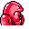

#108
Lickitung
Normal
Its tongue can be extended like a chameleon's. It leaves a tingling sensation when it licks enemies
Base stats Total 310
HP90
Attack55
Defense75
Speed30
Special60
Details
- Species
- Licking
- Height
- 3'11"
- Weight
- 144.0 lb
- Catch rate
- 45
- Base exp
- 127
- Growth
- Medium Fast
Level-up moves
LevelMoveType
StartWrapNormal
StartSupersonicNormal
Lv 7LickGhost
Lv 11WrapNormal
Lv 17DisableNormal
Lv 27StompNormal
Lv 31ScreechNormal
Lv 34Body SlamNormal
Lv 37SlamDragon
Lv 42Double-EdgeNormal
Evolution
Where to find
TM / HM
TM01 Mega PunchTM03 Swords DanceTM05 Mega KickTM06 ToxicTM07 Shadow BallTM08 Body SlamTM09 Take DownTM10 Double-EdgeTM11 BubblebeamTM12 Water GunTM13 Ice BeamTM14 BlizzardTM15 Hyper BeamTM17 SubmissionTM18 CounterTM19 Seismic TossTM22 SolarbeamTM24 ThunderboltTM25 ThunderTM26 EarthquakeTM27 FissureTM28 DigTM31 MimicTM32 Double TeamTM34 BideTM37 FlamethrowerTM38 Fire BlastTM42 Dream EaterTM44 RestTM48 Rock SlideTM50 SubstituteHM01 CutHM03 SurfHM04 Strength